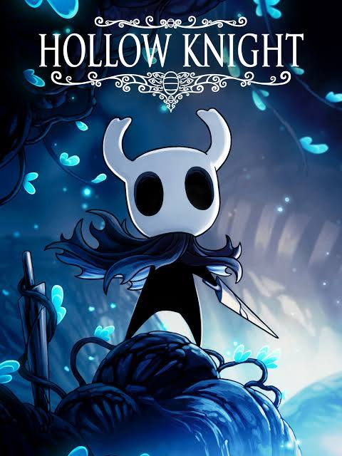

My favourite hobby is playing video games. I have been playing video games since I was a child. I love playing video games because it is a fun and exciting way to relax and unwind. I enjoy the challenge of trying to beat the game and the satisfaction of completing a difficult level. Video games are also a great way to socialize and connect with friends. I love playing video games and I hope to continue playing them for many years to come. Some of my favourite games include are mentioned below;
Hollow Knight

Hollow Knight cover art
Hollow Knight is a challenging and beautiful game that I have spent many hours playing. The game has a unique art style and a peaceful soundtrack. There was free DLC released for the game adding additional content such as the Grim Troop and Lifeblood. The gameplay is challenging and rewarding, with many difficult bosses and levels to overcome. I love exploring the world of Hollow Knight and discovering its secrets. The game has a deep and engaging story that kept me hooked from start to finish. I highly recommend Hollow Knight to anyone who enjoys challenging and atmospheric games.
Additional Information
Developer: Team Cherry
Release Date:
Platforms: Windows, macOS, Linux, Nintendo Switch, PlayStation 4, Xbox One
Elden Ring is a challenging and beautiful game that I have spent many hours playing. The game has a unique art style and a hauntingly beautiful soundtrack. The gameplay is challenging and rewarding, with many difficult bosses and levels to overcome. I love exploring the world of Elden Ring and discovering its secrets. The game has a deep and engaging story that kept me hooked from start to finish. I highly recommend Elden Ring to anyone who enjoys challenging and atmospheric games.
Additional Information
Developer: FromSoftware Inc.
Release Date:
Platforms: Windows, PlayStation 5, PlayStation 4, Xbox One, Xbox Series X and Xbox Series S
Ratchet and Clank is originally a PS2 game that I have spent many hours playing. The game has an old school engine and an unique soundtrack. The gameplay is simple, however has a very simple . I love exploring the world of Ratchet and Clank, finding unique cutscenes, discovering secrets and following the story behind the game. I highly recommend Ratchet and Clank to anyone who enjoys old school games and funny dialog.
Additional Information
Developers: Insomniac Games, Mass Media
Release Date:
Platforms: PlayStation 2, PlayStation 3, PlayStation Vita